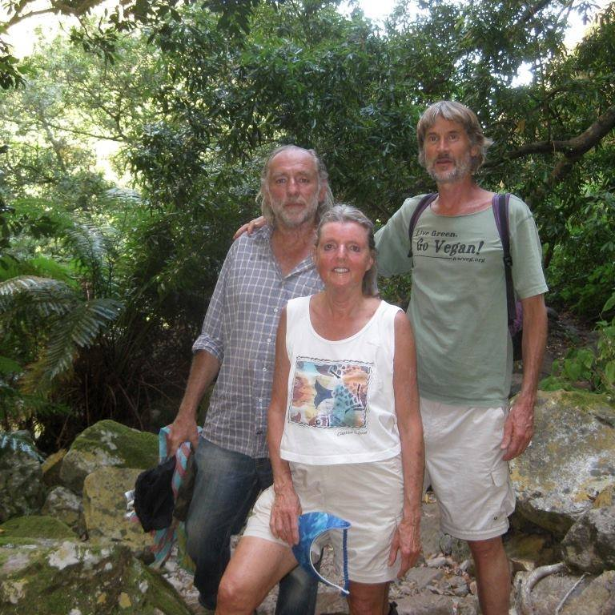

|  |
Rohan MillsonHistorian of nutrition and medicine Researcher of human eating patterns and their associated health outcomes Author of Why Animals Aren't Food, volumes 1-3. (Amazon, 2016) I'm currently researching a fourth book, The Low Carb Bullshit Artists Are Lying Us to Death.
Sadly, my progress is slow because Brandolini's Bullshit Asymmetry Principle applies: it takes at least an order of magnitude more time and energy to refute bullshit than it does to create it.
I'm also collaborating with a splendid artist, Cornelia van Huysteen, on Compassionate Eaters,
which describes many of the extraordinary historical figures down the ages who've foresworn animal-eating.
|
RM, on the left in the blue shirt, with Madeleine Tuttle and Dr. Will Tuttle, author of The World Peace Diet.